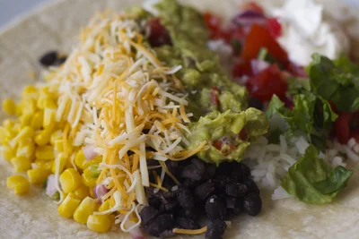

Homemade Chipotle Burrito

Description
This is a unique take on Chipotle's vegetarian burrito
from https://www.makebetterfood.com/recipes/homemade-chipotle-burrito/.
Ingredients
- Black beans
- 1 cup dried black beans
- 1 teaspoon canola oil
- 1 teaspoon cumin
- 1/2 teaspoon salt
- 1 bay leaf
- 3 cups of water
- Cilantro-Lime Rice
- 1 tablespoon canola oil
- 1 cup white basmati rice
- 2 cups water
- squeezed juice from one lime
- 1 teaspoon kosher salt
- 2 teaspoons finely chopped fresh cilantro
- Fajita Vegetables
- 2 green bell peppers
- 1 red onion
- 1/2 tablespoon chopped fresh oregano
- 1 tablespoon vegetable oil
- Mild Tomato Salsa
- 2 large, ripe tomatoes
- 1 small green jalapeno, seeded and minced
- 2 tablespoons red onion, minced
- 1/2 tablespoon fresh squeezed lime juice
- 1/2 tablespoon fresh squeezed lemon juice
- 2 teaspoons finely chopped fresh cilantro
- 1/2 teaspoon kosher salt
- Medium Roasted Chili-Corn Salsa
- 2 cups frozen corn
- 2 poblano chilis, finely minced
- 1 small green jalapeno, seeded and minced
- 2 tablespoons red onion, minced
- 1/2 tablespoon fresh squeezed lime juice
- 1/2 tablespoon fresh squeezed lemon juice
- 2 tablespoons finely chopped fresh cilantro
- 1/2 teaspoon kosher salt
- Guacamole
- 4 ripe avocados
- 1 cup red onion, minced
- 2 tablespoons fresh squeezed lime juice
- 2 teaspoons coarse sea salt
- 1/8 teaspoon freshly ground black pepper, to taste
- 1 ripe tomato, seeds and pulp removed, chopped
- Sour Cream
- Cheese
- 8 ounces monterey jack cheese, shredded
- 8 ounces white cheddar cheese, shredded
- 1 head of fresh romaine lettuce
- 8 to 12 extra large soft tortillas
Steps
- Black Beans
- Rinse beans and place in a large saucepan. Cover with water
2 inches higher than beans and soak overnight.
- Drain beans in a colander and rinse. Return to saucepan or
stock pot.
- Add water and bring to a boil.
- Add oil, cumin and cilantro to pan with black beans. Cook over
low heat, stirring occasionally, until beans are fully cooked
and flavors have combined, about 90 minutes.
- Remove from heat. Find and remove bay leaf and drain excess
water. Set aside to serve.
- Cilantro-Lime Rice
- In a 2-quart heavy saucepan, heat oil over low heat, stirring
occasionally until melted.
- Add rice and lime juice to pot. Cook until rice is almost
translucent.
- Add water and salt to pot and bring to a hard boil.
- Once water boils, cover and reduce heat to low. Simmer and
cook undisturbed until rice is tender and water is fully
absorbed, about 15-20 minutes.
- Turn off the heat and leave pot covered for 30 minutes to
allow rice to steam. Do not remove cover or stir rice.
- Transfer rice to a medium bowl and fluff with a fork.
- In a small bowl or ramekin, mix lime juice and salt together.
Pour over rice and stir to combine.
- Add cilantro to rice and stir to combine.
- Fajita Vegetables
- Chop vegetables and oregano and toss together in a small
bowl.
- Heat oil in a medium skillet over medium-high until
simmering.
- Saute vegetables until fragrant and starting to brown on
edges slightly, about 5 minutes.
- Remove from heat and reserve in bowl.
- Mild Tomato Salsa
- Core and seed tomatoes. Dice into small pieces and place in a
medium bowl.
- Mince jalapeno and onion. Add to bowl with tomatoes.
- Add juices, cilantro, and salt to bowl with tomato mixture.
Stir to combine.
- Medium Roasted Chili-Corn Salsa
- Cook corn in a small saucepan. Drain and reserve in a medium
bowl.
- Mince poblano chillies and cook in now-empty sauce pan over
medium-high heat until fragrant, about 3 minutes.
- Remove from heat and add to bowl with corn.
- Add juices, cilantro, and salt to bowl with corn mixture.
Stir to combine.
- Guacamole
- Using a knife, cut avocados in half and remove pits. Using
spoon, scoop out green flesh into a medium sized non-reactive
bowl. Using a potato masher (or a fork), mash the
avocados.
- Add chopped onion, lime juice, salt, and pepper. Mix with a
spatula until well combined.
- Chop tomato. If serving immediately, mix in with guacamole.
Otherwise, store tomatoes in an air tight container and mix
into guacamole right before serving.
- Sour Cream
- Place sour cream in a small bowl for serving on burritos.
- Cheese
- Shred cheese and mix together in a medium bowl.
- Lettuce
- Wash several pieces of fresh romaine lettuce. Dry each leaf.
- Roll each leaf up tightly. Using a sharp knife, cut rolled up
leaf into 1/4-inch pieces, creating long, thin strands of
shredded lettuce. Reserve in a bowl.
- Burrito Assembly
- Top tortilla with your favourite mix of homemade Chipotle-style
toppings.
- To roll, fold in sides of tortilla over rice, fold tortilla edge
closest to you over toppings, and pull tortilla edge farthest
from you down, tightening wrap as you go. It takes some
practice, so have a fork handy for the first few burritos while
you get the hang of it.